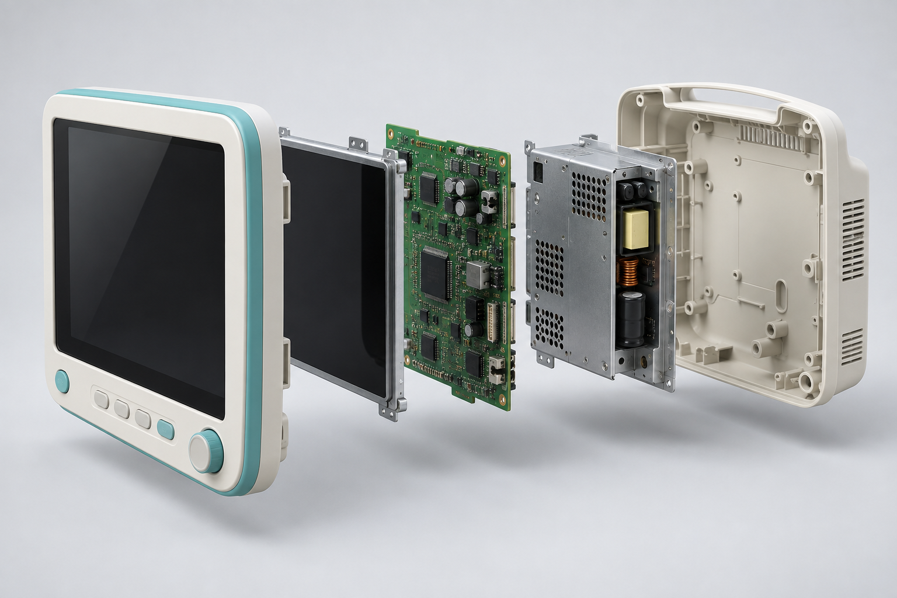

Start with the essentials.
Share your location, equipment type and approximate quantity. Add photos if you have them.
FOR HOSPITALS, CLINICS & LABORATORIES
Make space for what’s next. Start an assessment for surplus, non-working or decommissioned medical equipment.
One device or an entire department. No obligation to accept an offer.
FROM FIRST ENQUIRY TO FINAL OUTCOME
Share your location, equipment type and approximate quantity. Add photos if you have them.
Condition, service history and recovery options inform the next step and any offer.
Review the quote, collection arrangements and ownership documentation.
Track receipt and the recorded outcome: refurbishment, parts recovery or recycling.
INSIDE THE EQUIPMENT

PATIENT MONITORING
A view of the assemblies that support monitoring: the display, processing electronics, power module and enclosure.
BEFORE YOU SUBMIT
Patient monitoring, diagnostic, laboratory and therapy equipment can be described in an enquiry. Acceptance depends on the device, condition, documentation and location.
Report contamination concerns, stored patient data, missing ownership records or specialist handling needs. Do not include patient information in uploads.
Furniture, mobility aids and other non-device items require a separate suitability review. Collection coverage is not confirmed until your enquiry is reviewed.
SELL OR REQUEST DISPOSAL
A short enquiry first.
Technical details can follow after review.
EXPLORE REFURBISHMENT POSSIBILITIES
An enquiry-led equipment catalogue.
Unit condition and documents come first.
Try another search or clear your filters.
YOUR EQUIPMENT JOURNEY
ASSESSMENT & RECOVERY WORKSPACE